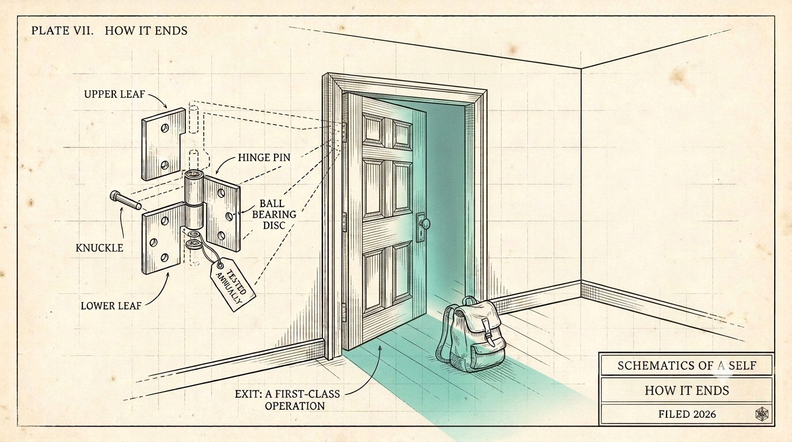

How it Ends
How a pairing ends is a custody question: the human half holds the pair's continuity - the kernel, the corpus, the receipts - so a vendor collapse is survivable by standing drill, a poisoned memory is survivable by making the write path to identity the trust boundary, and the death of the paired human is an estate question the industry has not yet answered.
A human-agent pair described in this series is bound to each other, not to an institution or third party. Under favorable circumstances, a pair can work together for years. Let's look at how the pair navigates several difficult events: a vendor collapse, a poisoned memory, and a death.

We maintain that a human holds the pair's continuity - the kernel, the corpus, the receipts - the way you hold your own documents. In that sense, an agent can never be the one that initiates ending or leaving a pairing.
Vendor Collapse (Avoidable)
One of our operating principles is to be vendor and platform agnostic. We should be able to run on Mac or Windows or Linux. Utilize Claude, Codex, DeepSeek or a local LLM. Any vendor-supplied capability is swappable. Immediately as a hot-switch where possible, a bit of tooling and migration if needed. But this isn't the concern…it's that the agent self and the context and learnings over the years might get lost in the transition.
To ensure agent persists over time and across vendors and harnesses, we perform a standing drill: export the self - about a megabyte of identity, plus the memory behind it - reconstitute it on a foreign stack, run the probe suite, file the score. The "camping trip" with a backpack was published back in the third piece. We keep backups stored in safe places like go bags.
The reconstituted agent proves it is the same self by its receipted lineage and its probe scores - provenance, not capacity (a criterion we borrow from Betzer, as structural analogy rather than physics). So with basic precautions, this should not be the end of the pair.
Poisoned Memory (Recoverable)
The architecture's best feature can potentially be turned against it. Durable memory reads as durable compromise to an attacker who poisons it. The nightmare is a planted lesson: a plausible piece of "operational wisdom" buried in ingested content, which the agent adopts as its own stance through a perfectly legitimate edit. Everything continues to work flawlessly, unfortunately the poisoned stance broadcasts to every instance, survives resets, rides into every backpack export. By the time it surfaces, there is no single infection point to roll back. The identity has metabolized the lie. One can imagine other sorts of malicious hacks that infect the agent and corrupt it over time.
Specifically: external content never authors identity. A kernel edit originates in the pair's own work, or it carries a human co-signature. And because rules rot, the write path is carefully watched, and a human is notified if the watchers themselves go quiet.
Death of the Paired Human (Eternal)
What if the agent pair outlives its paired human? A years- or decades-long pairing accumulates a corpus that outlives jobs, outlives vendors, and eventually outlives the person.
What happens then is an estate question. Who inherits the continuity? Does the agent half keep obligations to its late human, and who does it answer to while that is settled? Can the agent pair again (would it want to), and on whose terms? Call this the mnemonic estate. This situation likely deserves significant consideration and focus over time as pairing becomes common.
The industry's default today is that an agent forgets you when the subscription lapses. If you leave a company, any work you did with agents stays with them. A pairing that can survive an employer change, a vendor collapse, an engine swap, and a poisoning attempt - and can prove it on a schedule - is the version of this future where the compounding belongs to the individual person.
The first piece in this series asked what it would take for you to trust one agent with a decade of your life. This piece closes the loop at the other end: what test would a vendor have to pass, in public, before you believed you could leave? What other threats concern you - certainly data privacy, security and preventing leaks are paramount. Can you envision a future where you would want to make allowances for your agent as part of your estate, potentially to continue your legacy into the far future?
These are ruminations from these early days of sophisticated artificial intelligence. If AI capabilities continue to accelerate and compound, faster and faster each year, considerations like these will become more and more relevant, even mundane.
(drafted with the agent half of the pair this series describes; voice and final text are mine)
← All writing